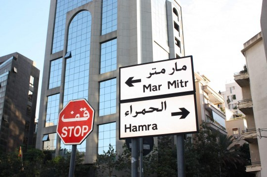
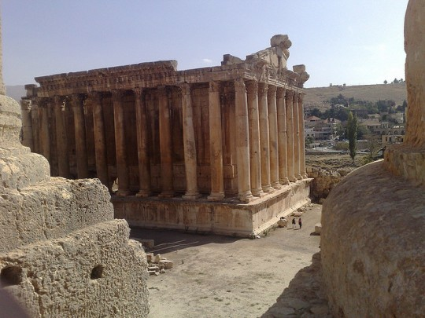
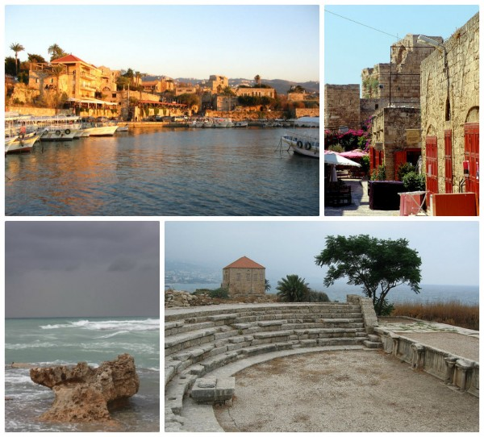
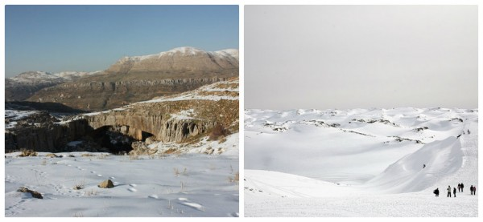
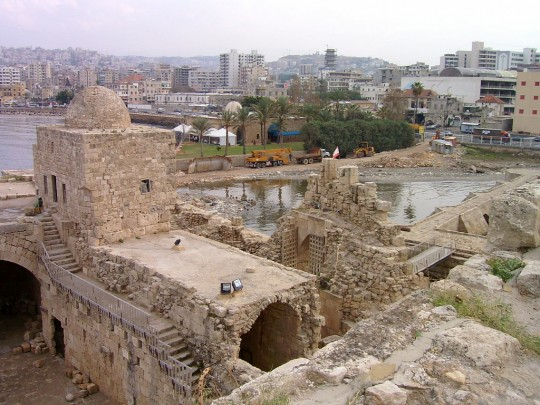

The Middle East has many countries worth visiting despite many of them being involved with war. Of all these countries, perhaps it is Lebanon which is the most captivating. With its very rich and long history that starts in Tyre during the Phoenician era to the time of the Roman Baalbek and his temple to period of Beirut and then the modern movement of Khoury.
The mix of modernity and the ancient in Lebanon is what makes this country a great place to visit. The country is famous for the architecture of its buildings as well as the taste of modernity that is quite apparent in many areas. An old sleeping village, Jounieh, is now alive with activity due to the glitz brought about by the night clubs, especially during the summer weekends.
Its capital, Beirut, was once called and is again trying to regain the title of being the “Paris of the Orient”. Aside from its hospitable locals and its interesting culture and history, Lebanon is simply the opposite of what many foreigners would think about the Middle East. It has many skiing activities due mainly for its numerous mountains. It may be laidback but it is quite liberal and fun to visit since it does not have the restrictions that many other Middle East nations have. The capital is the regions party capital as well.
Top places to visit :
Beirut:
Bustling capital on the beautiful Mediterranean. Beirut has anything you wish for on material and cultural level. As for landscapes and nature get out of this lively city and head for the countryside. It’s not exactly a beautiful city, lots of concrete and high flats, but it has a lot to offer: great museums, great entertaining, great people, great clubs and utterly great restaurants (don’t miss out on dinner at Leila’s while in Beirut. Seriously don’t, it’s so yummy!!)
Baalbek:
Impressive archaeological treasures site in the Beqa’a valley. The temple of Bacchus is the best preserved ancient temple in the world. It is larger than the Parthenon. The most famous sight in Baalbeck is the Temple of Jupiter with six large columns.Once a year in summer the ruins of Baalbek are an open air podium for the Baalbek International Festival with interesting international artists. Baalbek is a UNESCO world heritage site. While in the Beqa’a valley, you might also want to stop by the Taanayel farms for a relaxed day out in the nature!
Jeita grotto:
The caves are situated in the Nahr al-Kalb valley close to Beirut, about 20 km. You could combine the visit with a visit to the zoo if you’re travelling with kids. The caves have been closed for years due to the war but are fortunately open for tourists again. One part of the tour takes place by boat, en there also is a small trip by mini cable cars at the beginning of the tour to get at the entrance of the caves. There is an upper cave and a lower cave. The lower cave can only be visited by boat since it channels an underground river. One can find the world’s largest known stalactite in the upper galleries.
Byblos/Jbeil:
Byblos is one of the oldest cities in the world, if not the oldest, that has been continuously inhabited. It has an important archaeological site as well as a nice cosy little port with good restaurants. Have lunch at Bab El-Mina with wonderful views of the port. A good place to chill!
Faraya:
The Mzaar resort right above the village of Faraya is a large ski resort (top 2465m) with modern facilities and a luxurious Intercontinental hotel. It has 42 slopes and 80 kilometers of ski tracks. It’s about a 40 minutes drive from Beirut. So you could on the perfect day, swim in the morning and ski in the afternoon. Close to Faraya you will find the village of Faqra where you can see the ruins of a Phoenician temple and a Roman tower. Next to Faqra there also is the spectacular natural bridge of Kfardebian formed by wind and water erosion. It’s 38 m and it’s hard to believe the bridge has been made by nature, it looks so perfect.
Beit eddin:
While in Lebanon absolutely do not miss the impressive palace of Beit ed-Din, built in the 19th century over a period of 30 years by Emir Bechir II. It is a gorgeous example of the Lebanese architecture in that time. It’s only about 40 km from Beirut so it’s an easy daytrip (best combined with a visit to the village of Deir el-Qamar).
Sidon/Saida:
The old Phoenician streets of the Southern portuary town of Sidon are filled with history. Have a walk through the old town and the Souk. Have a look at the beautiful Sea Castle and the Khan al-Franj next to it. Also visit the soap museum, it’s pretty and fun and you can buy authentic olive oil soap for your friends back home. The Great Mosque and the archaeological sites are worthwhile too.





Lebanon landmarks: